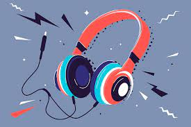

[ HOME ]
[ NEXT ]
[ ABOUT ME ]

Hello there! I am Tristan, 19 yo, and I am a music enthusiast, it just doesn't look like it. Music has always been an important part of my life, and I have a deep passion for it. From classical to rock, from jazz to electronic, I love exploring different genres of music and discovering new artists. I find that music has the power to evoke strong emotions and can be a great source of inspiration and motivation. Whether I'm listening to music, playing an instrument, or attending a concert, I always try to immerse myself in the experience fully. I believe that music can bring people together and create a sense of unity and connection.